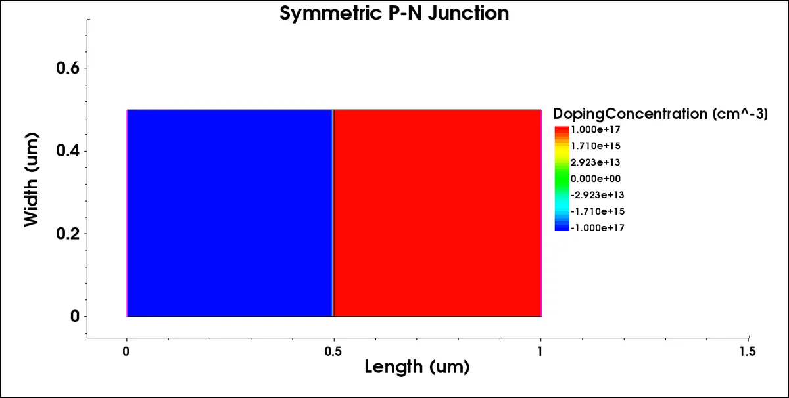

Simulating a silicon p-n junction with and without recombination in Synopsys Sentaurus TCAD, and reading what the current-voltage curves show.
Course
Electronic Devices 3, University of Glasgow (Oct 2026)
Tools
Synopsys Sentaurus Structure Editor and Sentaurus Device
Device
Symmetric junction, 1017 cm-3 boron and phosphorus, 0.5 µm each side
The simulation
The junction was swept from 0 V to -1 V (reverse bias) and then up to +0.6 V (forward bias) on the p contact, with the n contact held at 0 V. I ran it twice: once with no recombination model, and once as an ideal junction with Shockley-Read-Hall (SRH) recombination only in the neutral regions. The command files started from course templates and I set the parameters, including the forward limit of 0.6 V.

Figure 1. The simulated structure: p-type and n-type silicon, 0.5 µm each.Figure 2. Current against voltage for both runs, from my simulation output. The two curves overlap in forward bias.
What the curves show
In forward bias the current rises by about one decade for every 60 mV between 0.3 V and 0.6 V, which is what an ideal diode (ideality factor 1) does at room temperature.
In reverse bias, adding SRH recombination in the neutral regions raises the leakage current at -1 V about 40 times, from 1.6 × 10-18 to 6.3 × 10-17 A/µm.